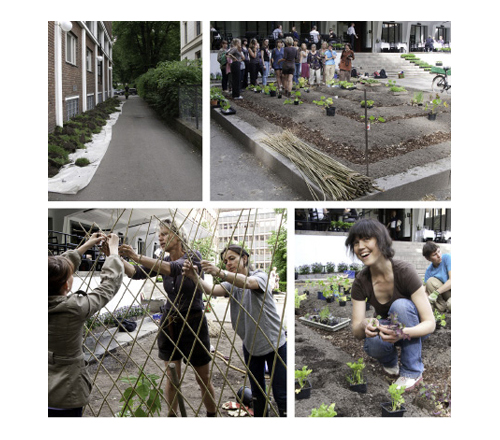

Kunstnernes hage (The artists garden) is the forerunner for Gentle Actions, which will be taking place here at the gallery Kunstnernes Hus on the 23rd of October untill the 14th of November. This organic garden is artist Katja Høst´s contribution to the art & ecology happening Gentle Actions.
The vegetable garden is designed by Marianne Leisner, who also conducted a workshop to establish it. Further workshops will follow throughout the summer, focusing on ecology and sustainable food production. The restaurant will participate in the project by incorporating vegetables and herbs from the garden in their menu. To read more about Kunstnernes hage and Gentle Actions visit gentleactions.wordpress.com
 |